Vannière à Badefols d'Ans, en Périgord Noir
L'osiertraditionnel etcontemporain
Quand mes mains entrelacent les brins d'osier, mon âme vagabonde aux pays des anciens.
Pièces uniques, réalisations sur mesure et stages d'initiation à la vannerie d'osier, dans mon atelier de Dordogne.
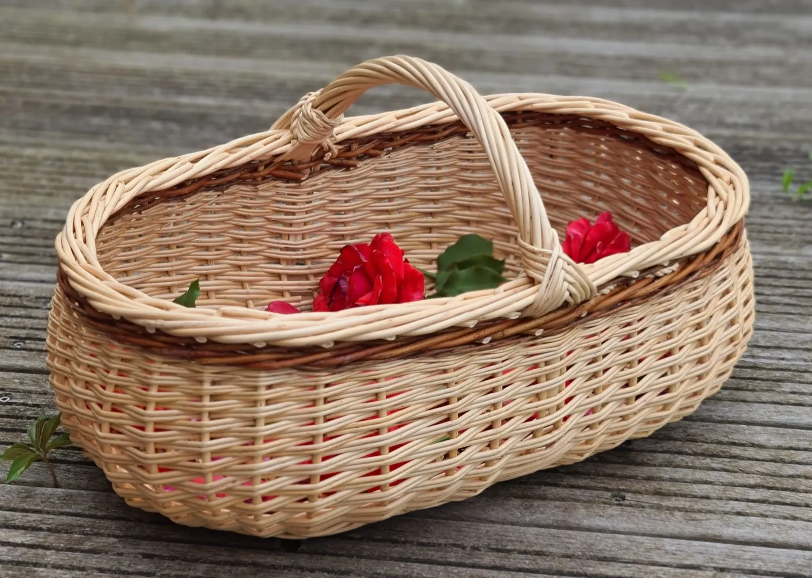
Pièce unique- Des pièces uniques
- Osier de Touraine ou de Corrèze
- Plus de 4 ans d'expérience
- Stages d'initiation dès 50 €
Mes créations, des techniques venues du monde entier
Au cours de mes voyages, la vannerie a toujours été présente au détour d'un chemin. J'aime explorer les techniques de vannerie du monde entier, avec l'osier et le rotin.
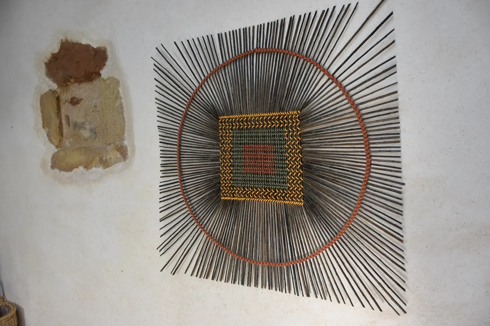
Odero, technique ougandaiseDécoration murale
Osier et papier japonais recyclé, technique ougandaise appelée Odero. Sur commande, dimensions et couleurs au choix.
Besace rectangulaire
Sac à bandoulière en cuir, osier brut Helix et Rouge Belge, technique des Asturies.
Cabas ajouré, anses en cuir
Osier brut Helix, deux anses en cuir et bordure tissée, technique de la tresse néolithique.
Cabas irlandais
Point irlandais avec anse alsacienne, osier brut Rouge Belge et Purpurea Daphnoïde.
Panier ovale à fond plat
Panier à champignons en osier brut Bourdiala.
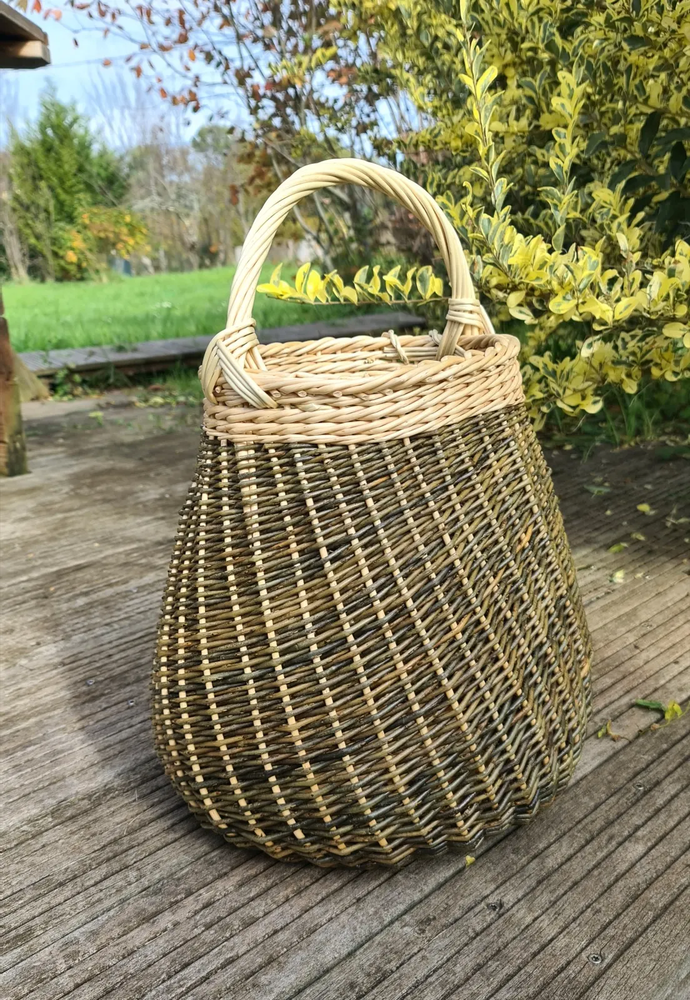
Panier twist blanc et vert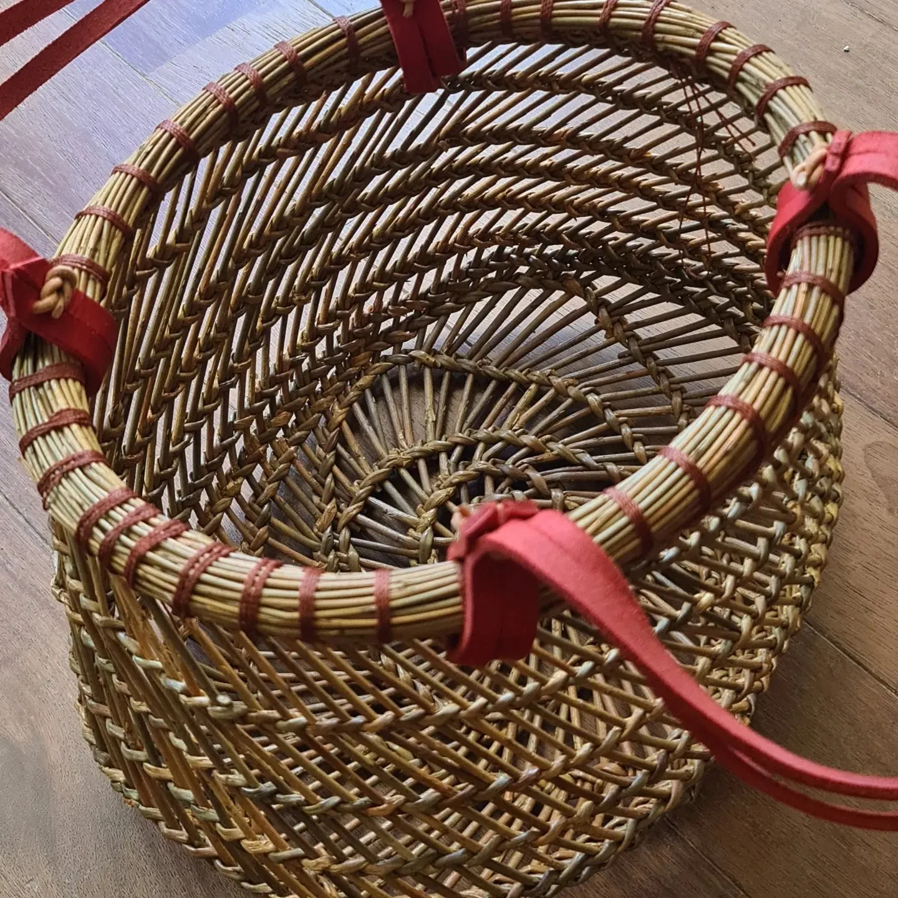
Cabas ajouré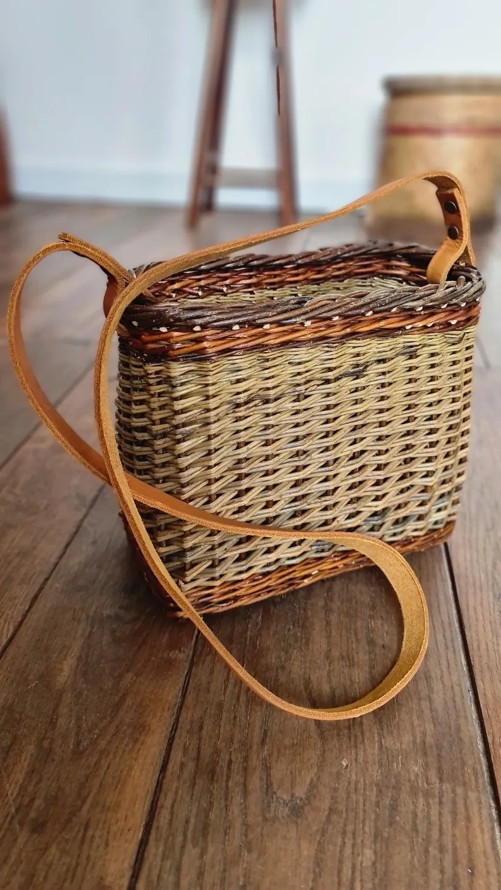
Besace rectangulaire
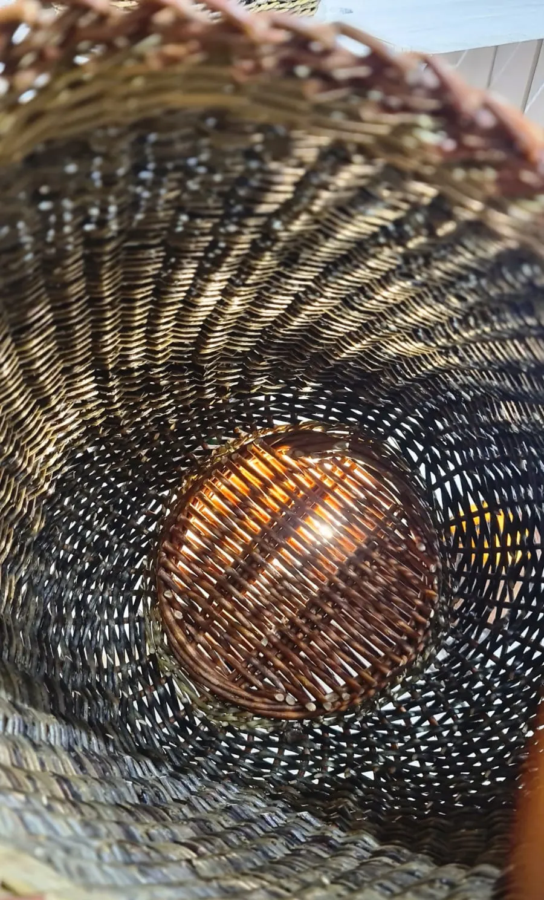
Luminaire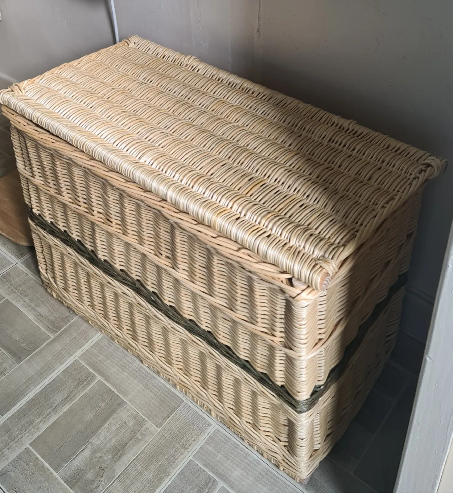
Une réalisation sur mesure
Mon travail se distingue par la création d'objets à la fois traditionnels et contemporains. N'hésitez pas à me contacter pour tout autre projet.
- Luminaires
- Panières décoratives ou utilitaires
- Paniers ovales, ronds ou rectangulaires
- Paniers pique-nique
- Tiroirs pour aménagements sur mesure
- Paniers pour animaux
Stages d'initiation à la vannerie
Prochaines datessur demande, par téléphone ou par mail
J'ai à cœur de transmettre mon savoir, ma passion, et de faire découvrir cet art merveilleux. Les stages ont lieu à l'atelier, à Badefols d'Ans.
Nichoir en osierLe matin, de 9h à 13h
Nichoir en osier brut.
65 €La corbeille asymétriqueLa journée, de 9h à 17h30
Corbeille asymétrique en osier brut.
100 €Panier à ailLe matin, de 9h à 13h
65 €MangeoireL'après-midi
Fabriquez 2 mangeoires, similaires ou différentes.
50 €La besace ovale en osierNiveau intermédiaire, de 9h à 17h30
110 €
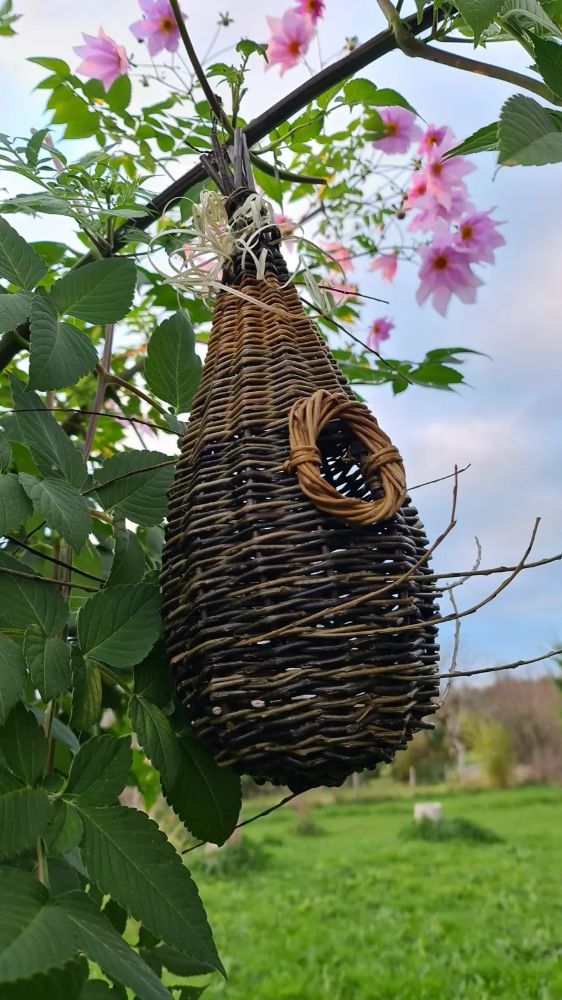
Le nichoir
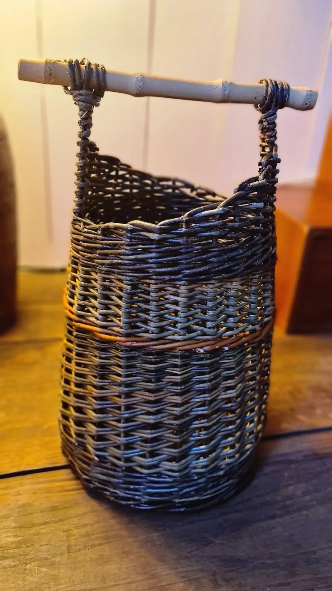
La corbeille
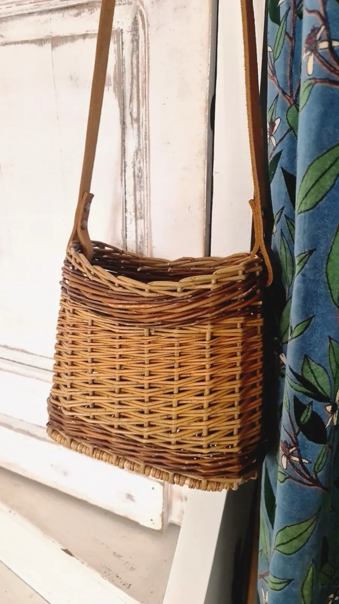
La besace ovale
Stage à la carte
Pour 2 personnes minimum, à l'atelier de Badefols d'Ans.
Possibilité de déplacement
Contactez-moi pour en parler.
Une carte cadeau
Pensez à offrir un stage de vannerie.
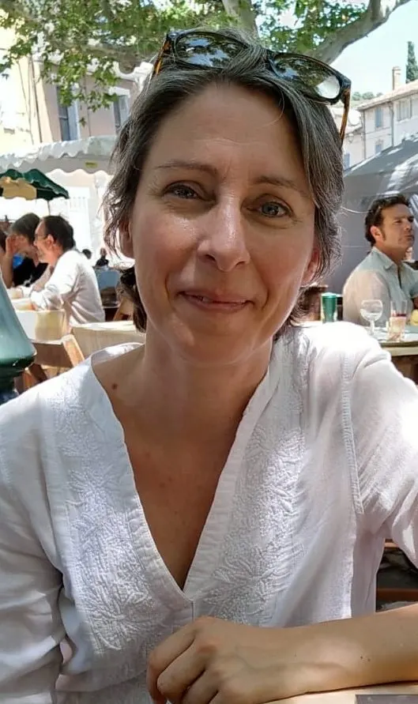
Céline TorckArtisan vannière à Badefols d'Ans
C'est une histoire, qui se raconte au fil des saisons.
Ma passion pour la vannerie a été forgée par des rencontres, et par l'apprentissage auprès de vanniers professionnels qui m'ont transmis avec bienveillance les techniques et savoir-faire de cet art ancestral.
J'aime plus particulièrement le tressage du point néolithique et la technique de la triple crocane.
La vannerie est bien plus qu'un simple métier pour moi : un moyen de se reconnecter avec la nature, de trouver la paix et l'harmonie dans la création artisanale.
Rejoignez-moi dans la découverte de la vannerie : ensemble, nous pourrons « tresser » des brins et tisser des liens.
Formée auprès de Tiane Cattet, Alexandra Marks, Valérie Lavaure, Emilie Leal et Philippe Guerinel.
Venir à l'atelier
Pour toute information complémentaire, un stage ou une commande, contactez-moi par téléphone ou par mail.
L'atelier showroom
Lieu-dit Raffard
232 chemin de Raffard
24390 Badefols d'Ans
L'échoppe
1 place de Guingois
24120 Terrasson-Lavilledieu